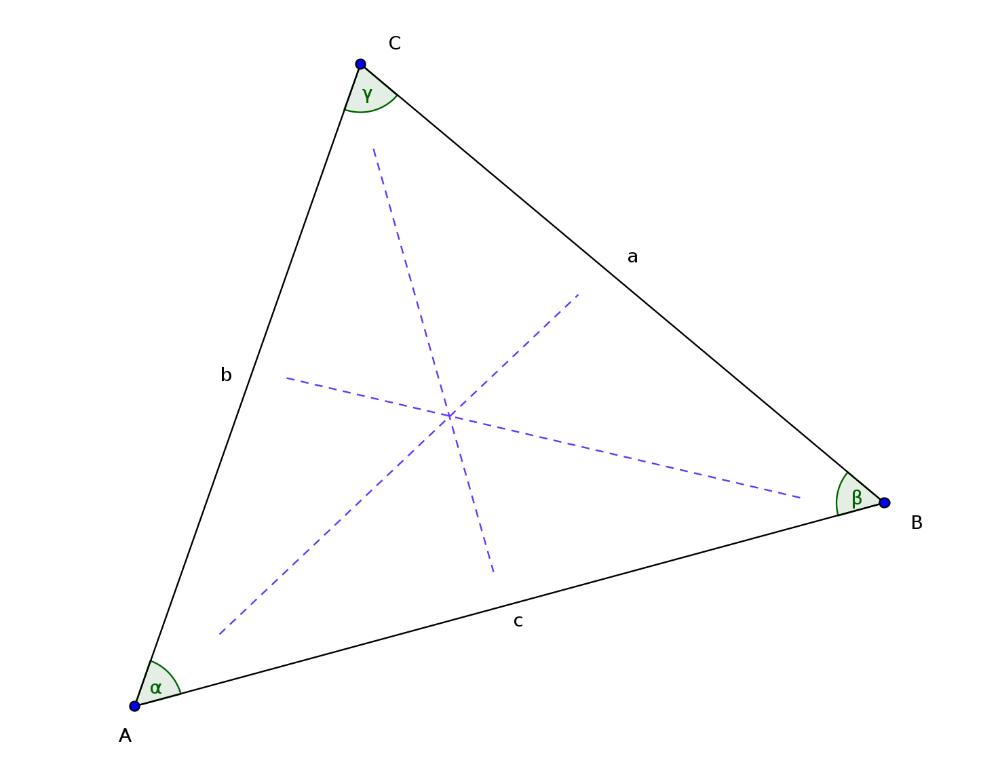

Winkelsummensatz:
Der Winkelsummensatz besagt, dass die Summe der Winkel in einem Dreieck
immer 180 Grad beträgt. \\ \[ \alpha + \beta + \gamma = 180^\circ \]
Sinussatz:
Das Verhältnis des Sinus eines Winkels zur gegenüberliegenden Seite ist
für alle 3 Winkel-Seitenpaare gleich.\\ Du brauchst also um den
Sinussatz verwenden zu können immer mindestens ein Winkel-Seitenpaar und
eine weitere Seite oder einen weiteren Winkel! \[ \frac{\sin(\alpha)}{a}
= \frac{\sin(\beta)}{b} = \frac{\sin(\gamma)}{c} \]

Kosinussatz:
Den Kosinussatz kannst du verwenden, wenn du einen Winkel und seine 2
aufspannenden Seiten gegeben hast, oder wenn du alle 3 Seiten kennst! \
w2=u2+v2−2⋅v⋅u⋅cos(ϕ)w2=u2+v2−2⋅v⋅u⋅cos(ϕ)